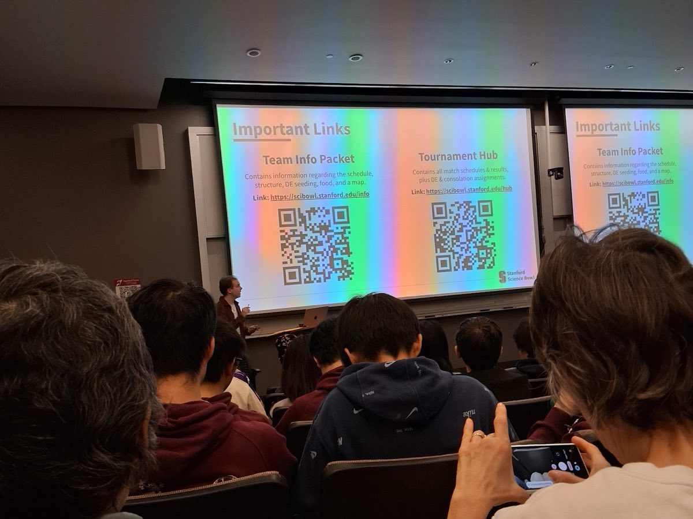
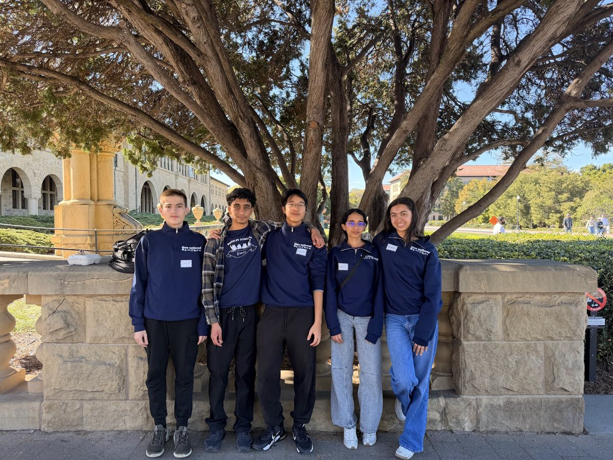
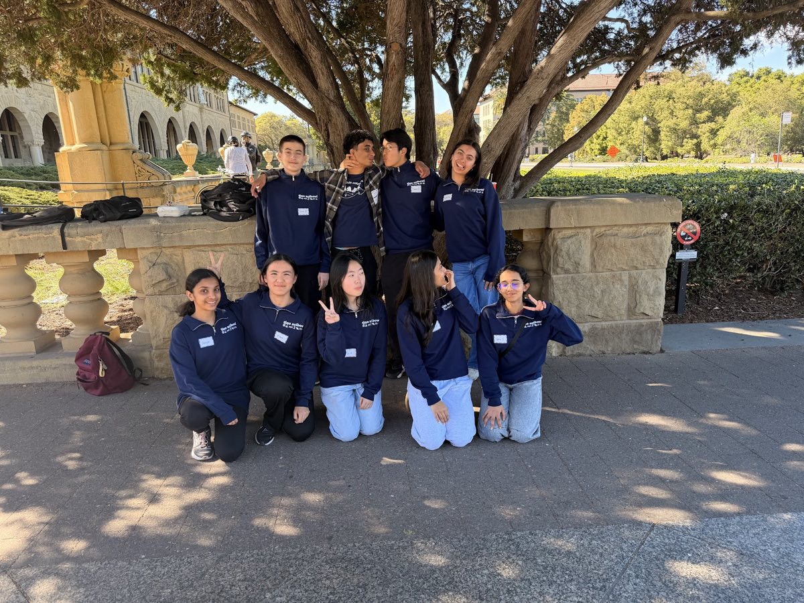

Science, at buzzer speed.
A fast-paced buzzer competition with five members per team. Think Jeopardy, with toss-up and bonus questions, but all science.
Buzz first, then work it out together
A toss-up question goes to whoever buzzes first. Answer it correctly and your team earns a bonus question to solve together.
The team plays six or more tournaments a year, in person and online, with live scoreboards and rankings.

Five subjects, one team
Questions cycle through five subjects, and each member usually specializes deeply in one or two.
- Math
- Physics
- Chemistry
- Biology
- Earth & Space

Serious about science, serious about fun
Two practices a week plus regular team bonding make for a tight-knit team that laughs a lot, while every member brings serious dedication.
How SciBowl tryouts work
Recent results
- Top 5 and Top 10 individual subject rankings for two members, Stanford Science Bowl (2026)
- Top 12 (double elimination), MIT Science Bowl (2023)
- 2nd place, Berkeley Science Bowl (2023)
Where the team goes next
Tino SciBowl alumni have gone on to UChicago, Stanford, MIT, UPenn, UCLA and UC Berkeley, and often continue hosting Science Bowl tournaments at their colleges.
Think you're fast on the buzzer?
Tryouts are at the start of the year. Pick your subjects and come find out.